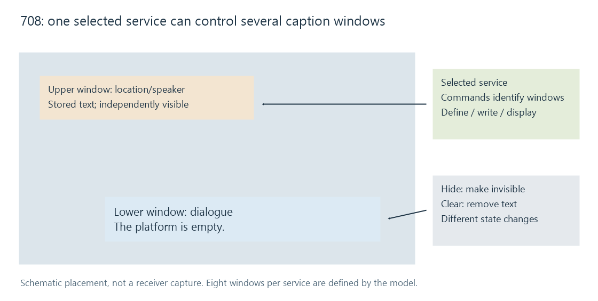

CEA-708 / CTA-708 captions
CTA-708 describes digital caption services with window, pen, text and visibility commands, alongside separate 608 compatibility carriage.
CTA-708, also known as CEA-708, defines a digital closed-caption model built from numbered services and presentation commands. A service can control several caption windows with their own placement, visibility and text properties.
Its digital transport can also carry 608 compatibility bytes. Those remain a separate coding model rather than becoming native 708 captions merely because both are in the same delivery.
A packet is not a displayed window
The transport organizes data into digital caption packets and service blocks. A service block identifies the service receiving its commands. The native service numbering supports services up to 63, while each service can define up to eight caption windows.
Those are capacity/model descriptions, not a promise that every consumer implements every possible service or feature.
| Identity | What it identifies |
|---|---|
| Carrying video stream | Where the caption payload travels |
| Digital caption packet/service block | The coded transport grouping and selected service |
| Window within that service | A particular area of caption presentation |
| Pen/text state | How subsequently written characters are presented |
Selecting service 1 does not mean selecting window 1. A service can update several windows as part of one caption presentation.
Windows have state and visibility
Take an invented service with a lower window for dialogue and an upper window for a speaker/location annotation.
| Operation | Result |
|---|---|
| Define both windows | Their geometry/properties become known |
| Write dialogue into the lower window | Its text state changes |
| Display the lower window | The dialogue becomes visible |
| Hide the upper window | Its stored content can remain while invisible |
| Clear a window | Its text contents change; this is not the same operation as hiding it |

Window commands can establish position, rows/columns and other presentation parameters. Pen commands establish text properties such as size, style or colour. A decoder reconstructs the state specified by the stream and its supported presentation model.
The visible result can therefore change without a new complete sentence arriving. A window can be revealed, hidden or moved while retaining its text.
The viewer's display policy also has a role
The standard includes presentation attributes associated with caption appearance. The available viewer controls and their interaction with authored attributes belong to the receiving implementation and its applicable rules.
That is distinct from choosing a service language or accessibility content role. A font-size preference does not select another translation.
For Emby, compare the selected recovered service and the delivered presentation representation. A conversion to plain text can retain the wording and times while flattening window placement or richer pen/window effects.
Recover the presentation at the requested time
A seek can land after window-definition and text-writing commands but before a later visibility update. The decoder needs sufficient preceding state or a suitable acquisition/reset sequence.
Extracting a cue list requires interpreting those commands and identifying the visible intervals. Capturing only the final character strings loses the operations that establish when and where those strings are shown.
See Also
- CEA-608 / CTA-608 captions
- Closed-caption services
- Subtitles for the deaf and hard of hearing (SDH)
- Subtitle rendering